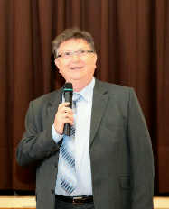
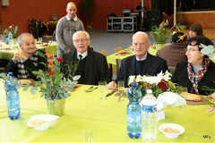
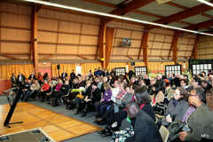

L'ADPED 94 - L'Association de Défense et de Protection de l'Enfance
Déficiente
L'Association a été créée à l'initiative d'un groupe de parents en 1961. Affiliée à l'Union Nationale des Associations de Parents d'Enfants Inadaptés (UNAPEI), elle est reconnue d'utilité publique en 1963. Elle regroupe les familles ayant un enfant inadapté et les familles désireuses d'apporter d'une manière active leur aide et appui.
Ainsi, l'ADPED 94 a pour objectifs de:
- Regrouper
les familles d'enfants handicapés afin de
faire connaitre et reconnaitre la personne en
situation d'handicap mentale comme une
personne à part entière.
- Défendre
les intérêts moraux, matériels et financiers
de la personne inadaptée.
- Créer
et gérer les établissements nécessaires aux
besoins des enfants, des adolescents et des
adultes.
- Mener
une action d’information permanente auprès du
public et des autorités locales.
Pour répondre à ces attentes, l’association gère 5 établissements :
- un
Institut Médico-Educatif (IME Les Lilas) à
l’Hay-les-Roses,
- un
Institut Médico-Professionnel (Impro Monique
GUILBOT) à l’Hay-les-Roses,
- un
Etablissement et service d’Aide par le Travail
(ESAT) à Fresnes,
- un
Foyer d’Accueil Médicalisé (FAM Marcel HUET) à
Chevilly-Larue,
- un
Foyer d'Hébergement (Résidence Jacques
JOSQUIN) à Fresnes.
Le mot du Président
"Créé à Fresnes, Rue Gallieni, en 1993 par l’ADPED après agrément de l’Etat, ce nouvel établissement médico-social va répondre à la liste d’attente des jeunes en difficulté et de leur famille. Ce sera le 3ème établissement créé par l’ADPED suite à l’EMP « Les Lilas » et l’IMPRO «Monique Guilbot » à L’Hay les roses. Viendront ensuite le FAM « Marcel Huet » à Chevilly-Larue qui fêtera ses 20 ans en 2014 puis le Foyer « Jacques Josquin » à Fresnes créé il y a presque 5 ans." " D’une ambiance familiale (au départ) nous arrivons, compte tenu des besoins de production et du nombre des compagnons accueillis, à une vie d’entreprise en sachant sauvegarder l’accompagnement attentif aux besoins des personnes fargiles et à l’aide individuelle à apporter aux compagnons.
L’ambition de cet ESAT est, aussi, de s’ouvrir au monde extérieur et de se faire reconnaître dans son environnement auprès des sphères publiques et privées. L’ADPED est le premier gestionnaire de la structure.
L’Association est toujours soucieuse de faire partager les valeurs dont elle est le garant auprès de tous les partenaires.
Ces valeurs sont le droit pour les personnes accueillies au sein des établissements, au respect fondamental de celles-ci, à leur dignité, à leur bonheur et à leur bien-être, à leur intégration dans la vie sociale et citoyenne.
L’association
s’engage à faciliter leur insertion dans la vie
locale grâce à un partenariat avec les
municipalités, les organismes et associations
concernés. "
Michel FERRY Président de l'ADPED 94


l’ESAT fête ses 25 ans d’ouverture en 2018